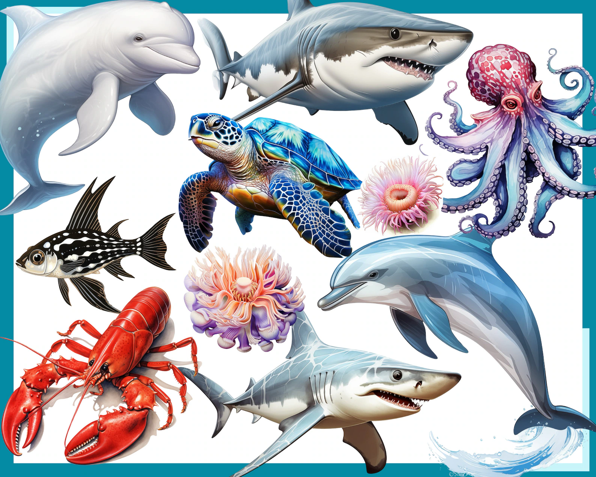
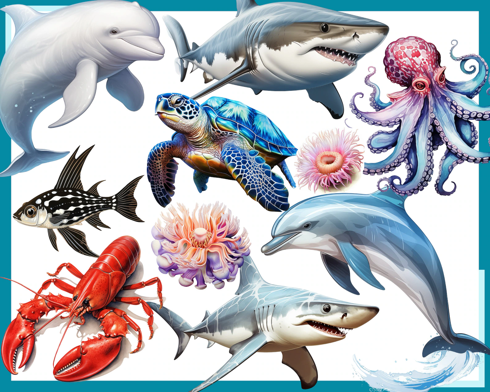

"The Sea Is An Underwater Museum still Awaiting Its Visitors..!"

"The Sea Is An Underwater Museum still Awaiting Its Visitors..!"

"Welcome to Ocean Beauty..!!"
The cutlassfish, also called ribbonfish, is a fish species characterized by its chrome-plated hue and long flat body.
Read More 
Phronima sedentaria is a species of amphipod crustaceans found in oceans at a depth of up to 1 km (0.6 mi).
Read More 

The word “axolotl” comes from the Nahuatl language of the Aztecs, and means “water dog & spend their whole lives underwater. .
Read More 
The pink amperima sea cucumber, nicknamed the “Barbie pig,” is one of the largest invertebrates living on the deep-sea floor..
Read More 
blue glaucus,is also called the blue dragon, sea swallow, or blue angel, is a brightly colored nudibranch commonly known sea slugs..
Read More 
Sea bunnies are actually a species of sea slug and were first described by renowned Japanese marine biologist Kikutaro Baba..
Read More 
The creature known as a Leaf Sheep or “Sea Sheep" consumes seaweed and produces energy through photosynthesis.
Read More 
Sea spiders swim and crawl along sandy area. They live in tropical climates and the frigid arctic, from shallow water
to deep ocean.
Read More 
The glass octopus is one of the most mysterious creatures of the deep sea. With transparent skin and only a few visible organs.
Read More 
Found in warm and tropical seas, flying gurnards are elongated fish with very large pectoral fins, each of which is divided into a shorter.
Read More